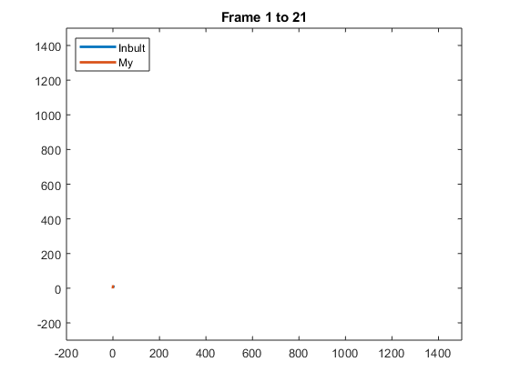

images = imageDatastore('..\Inputs\stereo\centre\*.png');
nfiles = size(images.Files,1);
[fx, fy, cx, cy, G_camera_image, LUT] = ReadCameraModel('..\Inputs\stereo\centre' ,'..\Inputs\model');
K = [fx 0 cx;0 fy cy;0 0 1];
cameraParams = cameraParameters('IntrinsicMatrix',K);
cameraCenterPlot_In = [0,0];
cameraCenterPlot_my = [0,0];
R_In = eye(3);
T_In = zeros(1,3);
R_my = eye(3);
T_my = zeros(1,3);
figure;
Start_Frame = 1;
Out_Video = VideoWriter('..\Output\Project2_Video.avi');
Out_Video.FrameRate = 100;
open(Out_Video);
for k = Start_Frame:1: 20
Image1 = readimage(images,k);
Image2 = readimage(images,k+1);
Image1=demosaic(Image1,'gbrg');
Image2=demosaic(Image2,'gbrg');
Undistorted_Image1 = UndistortImage(Image1, LUT);
Undistorted_Image2 = UndistortImage(Image2, LUT);
First = rgb2gray(Undistorted_Image1);
Second = rgb2gray(Undistorted_Image2);
Image1_points = detectSURFFeatures(First);
Image2_points = detectSURFFeatures(Second);
[features1,vpoints_1] = extractFeatures(First,Image1_points);
[features2,vpoints_2] = extractFeatures(Second,Image2_points);
indexPairs = matchFeatures(features1,features2) ;
matchedPoints1 = vpoints_1(indexPairs(:,1));
matchedPoints2 = vpoints_2(indexPairs(:,2));
if size(matchedPoints1.Location,1)<8
else
[Fmatrix, inliers_a, inliers_b] = RANSACfundamental_matrix(matchedPoints1.Location,matchedPoints2.Location);
F_matlab = estimateFundamentalMatrix(matchedPoints1,matchedPoints2);
[FU, FD, FV] = svd(F_matlab);
FD(3,3)=0;
F = FU*FD*FV';
[R_In,T_In] = Essential_Matrix(F,K,R_In,T_In);
[R_my,T_my] = Essential_Matrix(Fmatrix,K,R_my,T_my);
cameraCenterPlot_In(k,:)=[T_In(1,1) T_In(1,3)];
cameraCenterPlot_my(k,:)=[T_my(1,1) T_my(1,3)];
drawnow
plot(cameraCenterPlot_In(:,1),cameraCenterPlot_In(:,2),cameraCenterPlot_my(:,1),cameraCenterPlot_my(:,2),'LineWidth',2);
lowestx = min(T_In(1,1),T_my(1,1));
lowesty = min(T_In(1,3),T_my(1,3));
maximumx = max(T_In(1,1),T_my(1,1));
maximumy = max(T_In(1,3),T_my(1,3));
axis([min(-200,lowestx) max(1500,maximumx) min(-300,lowesty) max(1500,maximumy)]);
legend('Inbult','My','Location','northwest');
title(['Frame ',num2str(Start_Frame),' to ',num2str(k+1)]);
end
end
close(Out_Video);
..\Inputs\model/stereo_narrow_left.txt
Warning: No video frames were written to this file. The file may be invalid.
